Онбординг · отдел ведения и оптимизации рекламных кампаний
Программа обучения нового сотрудника
От «что такое DOOH» до самостоятельного запуска кампании в актуальном интерфейсе OmniDSP. Четыре этапа, одиннадцать учебных модулей, восемь рабочих задач, самопроверка и открытые вопросы.
блок не закрыт блок закрыт19 блоков: 11 модулей + 8 задач
Перед стартом
Как устроена программа
Программа собрана из двух Справок Omni360 — по продукту/рынку и по актуальному интерфейсу OmniDSP — и разложена по этапам так, как задачи приходят в реальной работе. Она не пересказывает Справки: предполагается, что вы их уже прочитали и открывали интерфейс. Здесь — контекст, на что обращать внимание, на чём чаще всего теряются деньги и время, и задания на закрепление.
Как читать
Модуль — теория плюс блок самопроверки и открытый вопрос на закрепление того, что вы должны уметь объяснить или показать в кабинете.
Блок самопроверки — несколько коротких вопросов, которые проверяются вместе по кнопке «Проверить». Пока хотя бы один ответ неверный, кнопка «Далее» заблокирована: ошибочные вопросы подсвечиваются, ответы можно менять и проверять сколько угодно раз. Это не экзамен — это способ не пропустить то, на чём потом теряются деньги.
Рабочая задача — то, что вы делаете руками: порядок, чек-лист, типичные ошибки.
Открытое задание — вопрос или практика в кабинете, которую выполняете вы. Ответ пишете в поле и отправляете руководителю прямо отсюда — он увидит его в своём дашборде и оставит обратную связь тут же, под вопросом.
Отметки и ответы сохраняются за вами — можно закрыть страницу и вернуться с того же места, в том числе с другого устройства.
Скриншоты кликабельны. В тексте они уменьшены по ширине колонки, надписи на них мелкие — нажмите на любой, чтобы открыть в полном размере, и Esc или клик, чтобы закрыть. Оранжевым на скриншотах обведено то, о чём говорит подпись под ними.
Из чего состоит программа
Этап
Фокус
Чем заканчивается
1
Рынок, форматы, кабинет, модели закупки
Разбираете чужие кампании и объясняете, почему они так собраны
2
Справочники, ТТ, медиапланирование
Собираете свой первый медиаплан на учебном брифе
3
Креативы, модерация, работа с операторами
Проводите креатив через модерацию до статуса «Согласован»
4
Запуск, статистика, ПГ/АГ
Запускаете кампанию под наблюдением руководителя и сдаёте аттестацию
Правило на первые три этапа
На первых трёх этапах вы работаете только с тестовым рекламодателем и не нажимаете «Запустить» и «Отправить на модерацию» без подтверждения руководителя. На четвёртом этапе — запуск под наблюдением.
Этап 1
Рынок, продукт и кабинет
Цель этапа — говорить с клиентом и оператором на одном языке и свободно ориентироваться в кабинете. Без этого медиаплан превращается в набор строк в Excel, а не в аргумент.
М1
Что такое DOOH и чем занимается Omni360
Понимать, что мы продаём и кому, и не путать outdoor с indoor.
Справка · Чем занимается Omni360Справка · Виды и форматы наружной рекламы
Что такое DOOH
DOOH (Digital Out-of-Home) — цифровая наружная и indoor-реклама: билборды, экраны в ТЦ, метро и другие цифровые конструкции. От статичного бумажного баннера её отличает то, что ролик и расписание показов меняются удалённо и в любой момент.
Экранами владеют операторы: у каждого свой парк конструкций и свой кабинет. Рекламодателю, которому нужно разместиться в нескольких городах, договариваться с каждым по отдельности нереально — поэтому между ними выстроена техническая цепочка:
SSP — платформа на стороне оператора: отдаёт его инвентарь, то есть свободные слоты на экранах, в общий аукцион.
DSP — платформа на стороне покупателя: в одном кабинете собран инвентарь многих операторов, из него и собирается кампания. Наша DSP — OmniDSP.
RTB — сам аукцион: за каждый конкретный выход на конкретном экране покупатели конкурируют в реальном времени.
Где в этой цепочке Omni360
Omni360 — технологический партнёр рекламных агентств по закупке DOOH в РФ. Мы не операторы экранов и не рекламодатели — мы прослойка между ними: подключаем агентства к DSP OmniDSP, где собран инвентарь десятков операторов под одной аукционной системой, и сопровождаем клиента на всех этапах кампании, от медиаплана до отчёта по факту показов.
Отдел ведения и оптимизации рекламных кампаний (РК) — тот, в который вы пришли, и тот, кто это сопровождение делает руками. Дальше в программе он называется коротко «отдел ведения РК». Подключением самих операторов к платформе занимается соседний отдел SSP.
Клиенты Omni360 — рекламные агентства и прямые рекламодатели, которым агентство не нужно. Наша задача — чтобы они получили нужный охват на нужных экранах по управляемой цене, не разбираясь самостоятельно в десятках операторских кабинетов.
Если спросят про маркировку
Маркировка ОРД в DOOH не нужна: закон о маркировке (регистрация креатива у оператора рекламных данных, токен erid на макете, отчётность в ЕРИР) написан под интернет-рекламу, а наружная и indoor-реклама под него не подпадают. Спрашивают об этом редко, обычно клиенты, пришедшие из диджитала, — но ответ стоит держать наготове.
Как продаётся эфир: «барабан» и программатик
У любого экрана есть рекламный барабан — циклический плейлист роликов. Рекламный слот — отрезок барабана, который продаётся (например, 10 секунд в минутном барабане); за час он повторяется много раз. Продать эфир можно двумя разными способами — «барабаном» (так на рынке называют классическую эфирную закупку, официального названия у неё нет) и программатиком:
Через «барабан» — клиент фиксированно выкупает саму поверхность целиком на срок — например, на 2 недели или месяц — и в это время ролик крутится в закреплённом за ним слоте барабана. Короткие сроки размещения через «барабан» почти нигде не доступны, а ходовые поверхности часто выкуплены заранее: слоты, не выкупленные постоянными клиентами, оператор обычно заполняет социальной рекламой или саморекламой.
Через программатик (RTB) — вместо всей поверхности целиком вы участвуете в аукционе за выход на поверхности в реальном времени: сами выбираете, где и когда размещаться, сколько часов в день и в какое время крутить ролик, какую адресную программу собрать, когда менять креатив и расписание, а также к каким триггерам привязать выход роликов (доступны, например, триггеры по погоде и пробкам).
Клиенту это объясняется так: на дорогой и востребованной поверхности длительное размещение через «барабан» обойдётся ощутимо дороже, чем сопоставимый объём выходов в прайм-тайм через программатик — и часто эфир под «барабан» просто раскуплен заранее. Программатик даёт больше гибкости за счёт того, что вы не платите за поверхность целиком, а конкурируете за отдельные выходы там и тогда, где они нужны. Обратная сторона — количество выходов программатик не гарантирует: часть аукционов вы проигрываете, поэтому прогноз остаётся прогнозом.
Клиент хочет разместиться на очень популярном билборде на короткий срок — 3 дня, с гибким изменением расписания по ходу. Какой способ закупки подходит?
Форматы: outdoor и indoor
Все форматы делятся на два типа — outdoor (улица) и indoor (помещения). В общении с коллегами и клиентами, в выгрузках из системы и в медиапланах вы будете встречать и полные названия форматов — «Сити-формат», «Ситиборд» и так далее, — и сокращения, русские или английские: «СФ» или CF, «СБ» или CB. В самом интерфейсе формат подписан латинским сокращением, а не русским названием, так что связку «название → код» нужно держать в голове. У indoor-форматов вместо аббревиатуры служебное имя категории, никак не связанное с русским названием: расшифровывать его логически не нужно, просто запомните, что за чем стоит.
Тип
Формат
Сокращение
Кого ловит
Outdoor
Сити-формат
CF
Пешеходы, на уровне глаз. Самый дешёвый формат
Outdoor
Ситиборд
CB
Пешеходы + узкие автодороги
Outdoor
Билборд
BB
Перекрёстки и трассы. Высокая конкуренция за места
Outdoor
Суперсайт
SS
Видно издалека и ночью. Дорого, мало мест в центре
Outdoor
Медиафасад
MF
Огромные экраны на зданиях. Имиджевый максимум, самый дорогой формат
Indoor
Экраны в помещениях
OTHER
ТРК / ТЦ / БЦ / магазины, аэропорты и транспорт — всё, что не подошло под более узкую категорию ниже
Indoor
Вокзалы и МЦК
CITY_FORMAT_RD / CITY_FORMAT_RC
Экраны на вокзалах и станциях Московского центрального кольца
Indoor
Павильоны метро
CITY_FORMAT_WD
Экраны внутри павильонов и на станциях метро
Indoor
Пункты выдачи
PVZ_SCREEN
Экраны в ПВЗ Wildberries
Запомнить сразу
Indoor-инвентарь и часть outdoor не передают OTS. Это значит, что такие экраны нельзя закупать по OTS и в отчётности OTS по ним будет пустой. Если клиенту нужны данные по OTS, скажите об ограничении заранее: покажите, по каким экранам АП данных не будет, и предложите варианты — заменить их на инвентарь с OTS или оставить и считать по выходам. Убирать что-то из адресной программы можно только после того, как клиент согласовал замену.
Клиент просит запустить кампанию по ставке «по OTS» и получать данные по OTS за каждый выход с каждого экрана. В подобранной адресной программе половина экранов — indoor. Что делать?
Сити-формат стоит на улице у входа в ТЦ — это outdoor. Точно такой же по конструкции и размеру экран, но сразу за дверью, внутри ТЦ, — это...
Какой outdoor-формат — самый дешёвый и ловит пешеходов на уровне глаз?
Indoor-код CITY_FORMAT_WD — это экраны...
Почему в DOOH не нужна маркировка ОРД?
Объясните в 2–3 предложениях клиенту, зачем DOOH нужен, если у него уже запущена интернет-реклама.
Скопировано — вставьте руководителю в чат/тикет
М2
Кабинет OmniDSP: навигация, роли, статусы
Свободно ориентироваться в интерфейсе и понимать, что видит клиент со своей ролью.
Справка · Начало работыСправка · Список кампаний
Два интерфейса: старый и новый
У платформы сейчас два кабинета, и это переходный период. Большая часть клиентов пока работает в старом интерфейсе, но мы постепенно переводим их и переходим сами на новый. Новый ещё дорабатывается, при этом подавляющее большинство функций в нём уже доступно.
Вход в оба кабинета по одним и тем же данным, пароль сохраняется сразу для обоих. Всё дальнейшее обучение построено на новом интерфейсе: скриншоты, названия кнопок и порядок шагов относятся к нему.
Навигация
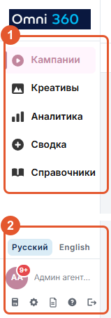
Левая панель. 1 пять разделов навигации. 2 язык, тема, «Инструкция пользователя», «Помощник Omni360» и выход.
Слева — пять разделов:
Кампании — список всех РК с фильтрами по рекламодателю, типу, городу, датам и статусу, и создание новой кампании. Основной раздел: здесь вы проведёте большую часть времени.
Креативы — загрузка макетов и статусы их модерации у операторов.
Аналитика — выборка кампаний по периоду и бюджету с экспортом в Excel. Нужна, когда смотрите не одну РК, а срез сразу по нескольким.
Сводка — мониторинг и агрегированные показатели: план и факт, причины отклонений, рекомендации по конкретной РК.
Справочники — рекламодатели, бренды, агентства и пользователи. Что именно из этого вам видно, зависит от прав роли.
Внизу панели слева — переключатель языка и темы, калькулятор программатик-кампании, «Инструкция пользователя» и «Помощник Omni360». Помощник отвечает на разовые вопросы, инструкция — для последовательного изучения. Калькулятор нужен для быстрой прикидки стоимости и числа выходов по городу, формату и количеству экранов ещё до создания РК.
Если нужного справочника или кнопки нет — сначала перечитайте справку: скорее всего, дело в ограничении вашей роли, а не в баге. Если и там ответа нет — спросите коллег или руководителя, а если похоже на реальную ошибку системы — передайте вопрос в продукт.
Посмотрите кабинет своими руками
Прежде чем читать дальше про статусы и действия, зайдите в новый интерфейс под тестовым аккаунтом — логин и пароль возьмите у руководителя — и походите по разделам сами: откройте список кампаний, зайдите внутрь любой, полистайте «Креативы», «Аналитику» и «Сводку», понажимайте фильтры и переключатели. Дальше в тексте вы будете узнавать то, что уже видели своими глазами.
Чего в тестовом кабинете делать не нужно
Не запускайте и не останавливайте рекламные кампании и не меняйте данные в «Справочниках». Всё остальное можно открывать и нажимать свободно.
Статусы рекламных кампаний
Статусы рекламных кампаний сгруппированы по смыслу — точное состояние всегда проверяйте в колонке «Статус» внутри кампании, а не только по группе фильтра.
Система или оператор обрабатывает кампанию. Эти статусы бывают только у гарантидов (ПГ и АГ) — у аукционных РК их не будет
Новые
Новая
Создана, ещё не запущена — единственная группа, из которой можно удалить
Завершённые
Завершена, Бюджет исчерпан, OTS исчерпан, Без инвентаря
Размещение закончилось или не может продолжаться
Остановлены
Остановлена, Отменена, Отклонена, Удалена
Кампания не участвует в размещении. Вернуть в работу можно только из статуса «Остановлена» — её запускают заново. «Отменена», «Отклонена» и «Удалена» повторно не запускаются: нужна новая кампания
Ошибки
Ошибка, Ошибка подтверждения, Ошибка отмены
Операция не завершилась — откройте кампанию и проверьте сообщение
Правки — только через паузу
Активную кампанию нельзя редактировать на ходу: система пишет «Кампания активна — поставьте на паузу для редактирования». Пауза — это кнопка «Пауза» в левом нижнем углу внутри кампании. Порядок всегда один: пауза → правки → сохранить → запустить снова. Забыть последний шаг — значит оставить кампанию стоять и не заметить этого.
Действия со строкой и НДС
Меню действий зависит от статуса: у новой кампании — «Открыть», «Запустить», «Дублировать», «Удалить», «Экспорт эфирной справки», «Статистика (Excel)».
«Дублировать» создаёт черновик на основе текущей кампании вместе с бюджетом и адресной программой — перед запуском копии обязательно обновите даты, бюджет и актуальность экранов.
Колонка бюджета по умолчанию — бюджет клиента без НДС; кнопка ⇄ переключает на бюджет баера. НДС в системе — 22%, начисляется отдельно поверх бюджета/ставок без НДС, не смешивайте эти суммы вручную.
Пример: в колонке бюджета указано 100 000 ₽ — это сумма без НДС. С учётом НДС 22% клиент по факту заплатит 122 000 ₽. Ошибкой будет принять эти 100 000 ₽ за сумму с НДС и занизить реальный бюджет клиента на переговорах.
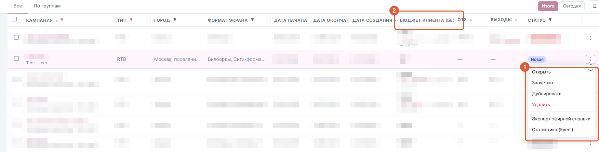
1 меню ⋮ в конце строки кампании — набор пунктов зависит от статуса. 2 колонка «Бюджет клиента (без НДС)»; кнопка ⇄ в её заголовке переключает на бюджет баера.
Вам нужно посмотреть агрегированные показатели сразу по нескольким РК и проверить права нового пользователя. В каких разделах навигации это делается?
Кампания в статусе «Отклонена». К какой группе фильтра она относится?
Кампания работает, вам нужно временно приостановить показы и потом вернуться к ней с правками. Какая кнопка?
Переключатель ⇄ в колонке бюджета кампании меняет вид между...
По брифу клиента, которому нужен доступ «только смотреть статистику, без бюджетов и создания кампаний», опишите, какую роль вы бы выдали и почему. Проверьте предположение на тестовом пользователе и опишите, что он реально увидел.
Практическое задание — выполняется в тестовом кабинете.
Скопировано — вставьте руководителю в чат/тикет
М3
Три модели закупки: RTB, ПГ, АГ
Подбирать модель под задачу клиента, а не под привычку.
Справка · Типы кампанийСправка · ПГ и АГ: гарантированные размещения
Во всех трёх моделях вы покупаете один и тот же инвентарь — экраны операторов. Разница только в том, как определяются цена и объём выходов. Общее слово для двух моделей из трёх — гарантид: так называют закупку, где объём и цена согласованы заранее, без аукционной конкуренции.
RTB (аукцион) — конкретный выход заранее не покупается: каждый раз вы конкурируете с другими рекламодателями за право показать ролик именно сейчас. Цена всякий раз своя, объём не гарантирован.
ПГ (программатический гарантид) — гарантид в той же форме создания кампании, что и RTB: фиксированная стоимость размещения вместо ставки в аукционе.
АГ (автогарантия) — гарантид прямой сделкой с оператором на конкретные экраны и даты. Собирается в отдельном мастере, минуя общую форму создания кампании.
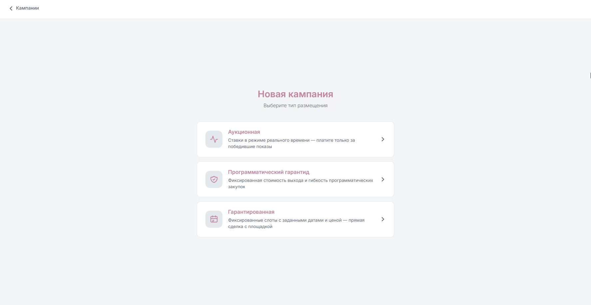
Этот выбор вы делаете в самом начале, при создании кампании. В интерфейсе карточки названы иначе, чем в разговоре: «Аукционная» — это RTB, «Программатический гарантид» — ПГ, «Гарантированная» — АГ (её отдельный мастер помечен как «Автогарантия»). В Справке те же три типа местами обозначены как RTB, PG|Flex и AG.
RTB (аукцион)
ПГ (программатический гарантид)
АГ (автогарантия)
Стоимость
Динамическая, зависит от сезона и спроса
Фиксированная стоимость размещения
Фиксированный прайс за набор экранов, возможна скидка или своя цена
Тип ставки
По выходам или по OTS
По выходам
Без аукционной ставки — оплата за размещение целиком
Как создаётся
Общая форма создания РК
Та же форма создания РК, тип «Прог. гарантид»
Отдельная форма: Основные параметры → Экраны → Стоимость → Итоги
Гарантия
Нет: возможны проигрыши в аукционе
Фиксированная стоимость и объём
Прямая сделка с площадкой на конкретные экраны и даты
Правки после запуска
Да
Нет — условия согласованы заранее
Условия фиксируются на этапе отправки на модерацию
Триггеры на ходу (погода, пробки)
Да
Нет
Нет
Аукционный тип доступен клиенту базово. ПГ и АГ подключаются по правам аккаунта — если карточки типа нет в форме создания РК, дело в доступе, а не в интерфейсе.
Правило выбора
Нужна гибкость, тесты и правки на ходу — RTB. Нужен гарантированный объём с фиксированной стоимостью и клиент готов зафиксировать условия — ПГ. Нужна прямая сделка на конкретные экраны и даты без аукциона — АГ.
Клиент хочет тестировать разные креативы и оперативно менять ставки по ходу кампании. Какая модель подходит?
В какой из трёх моделей можно привязать выход ролика к триггерам — например, к погоде или пробкам?
Где в интерфейсе создаётся АГ?
Три учебных брифа
Брифы ниже собраны из настоящих запросов агентств — сокращены, названия изменены. Формат полей тот же, что вы будете видеть в работе.
Комментарий — готовы три версии ролика, клиент хочет менять их по неделям и перекидывать бюджет между городами по ходу, в зависимости от того, где лучше идёт
Бриф В · «Точка Любви»
Рекламодатель — сеть кофеен, открытие флагманской точки
Комиссия — СК, стандартная шкала
ГЕО — Москва, четыре конкретные конструкции рядом с точкой: Russ Outdoor, Большая Якиманка, 19 и 22; РАСВЭРО, Большая Якиманка, 24 (две стороны)
Период — 10.09, один день
График вещания — 10:30–19:00
Форматы — по списку выше
Бюджет — рекомендованный от нас
Комментарий — клиенту нужны именно эти четыре поверхности в день открытия, замены не рассматриваются
По каждому из трёх брифов выше выберите модель закупки и обоснуйте выбор в 1–2 предложениях. Отдельно назовите, что в брифе стало решающим аргументом.
Скопировано — вставьте руководителю в чат/тикет
Этап 2
Подготовка размещения
Всё, что происходит до того, как появится хоть один макет — по порядку: сначала заводим клиента в системе, затем вытаскиваем технические требования и в конце собираем медиаплан.
М4
Справочники: рекламодатель, бренд, пользователи
Заполнять карточки рекламодателя, бренда и пользователя с первого раза правильными полями.
Справка · Настройки и справочники
Справочники — это база данных кабинета, отдельная от самих кампаний. В ней три сущности, которые вы будете заводить руками:
Рекламодатель — клиент, от чьего имени крутится реклама.
Бренд — отдельный продукт или линейка внутри рекламодателя. Разграничивает его кампании, чтобы по ним можно было выставлять отдельные счета.
Пользователь — учётная запись, с которой заходят в кабинет: клиент, его гость или мы сами.
Кампанию нельзя создать «в воздухе»: сначала в справочниках должен быть заведён рекламодатель, к которому она привяжется, и только потом можно выбрать для неё бренд.
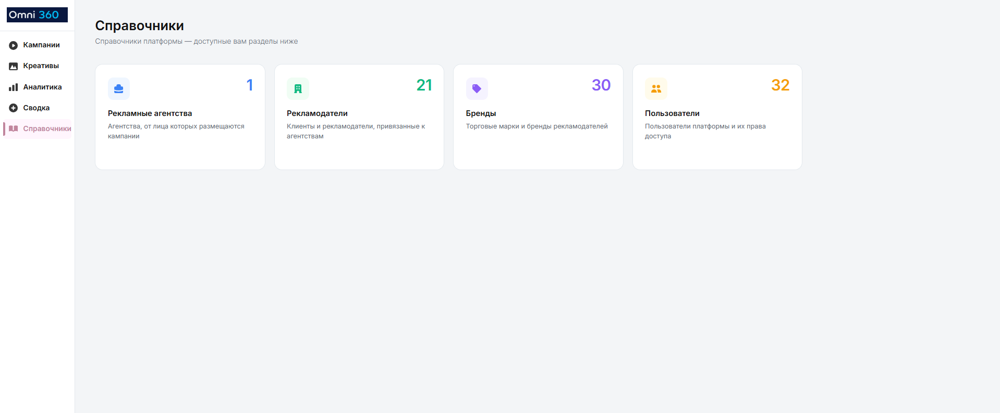
Справочники → четыре раздела: агентства, рекламодатели, бренды, пользователи.
Рекламодатель
Дальше — как завести карточку рекламодателя. Два поля в ней стоит разобрать отдельно: надбавка определяет, какие цены увидит клиент, а месячный лимит — сколько он всего сможет открутить за календарный месяц. Ошибка в любом из них всплывает уже на переговорах о бюджете.
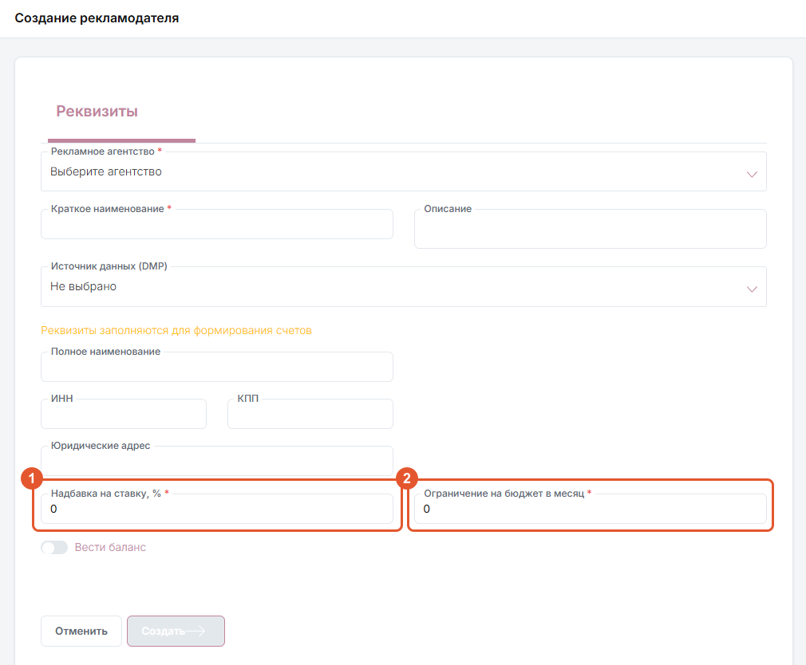
Справочники → Рекламодатели → «Создать рекламодателя». 1 «Надбавка на ставку, %» — то, что ниже названо надбавкой. 2 «Ограничение на бюджет в месяц» — месячный лимит. Оба поля обязательные и по умолчанию стоят в 0.
«Надбавка на ставку, %» (в разговоре — просто надбавка) — определяет, какие цены видит клиент. Поле обязательное и по умолчанию уже стоит 0% — если надбавки нет, просто оставляем как есть, обнулять вручную не нужно. Отрицательное значение для скидки недоступно.
«Ограничение на бюджет в месяц» (в разговоре — месячный лимит) — сумма на все кампании рекламодателя за календарный месяц; уже созданные кампании уменьшают остаток. Поле тоже по умолчанию 0, и это значение не означает «нет лимита вообще» — оно означает «личного лимита нет, действует лимит агентства». Личный лимит не может превышать лимит агентства.
Реквизиты. Если по рекламодателю планируется работа со счетами, заполняйте их корректно и не подставляйте фиктивные значения «для галочки». На практике отдел ведения РК в подавляющем большинстве случаев ставит в обязательных полях реквизитов единицы.
Бренд
Бренд всегда привязан к рекламодателю и разграничивает его кампании — по ним можно выставлять отдельные счета. Создаётся в справочнике «Бренды» или кнопкой «+ Новый бренд» прямо в форме создания РК после выбора рекламодателя.
Ловушка привязки
Если в записи креатива указан бренд, эта запись привяжется только к кампаниям этого бренда — то же с рекламодателем. Для универсальных креативов эти поля лучше оставлять пустыми.
Пользователи и роли
Справочники → Пользователи → добавление учётной записи: почта — это логин, пароль задаётся вручную и сохраняется, чтобы его можно было передать. Сами учётные записи и новые агентства заводятся не из-под вашего аккаунта, а из специального админского — логин и пароль от него возьмите у руководителя.
Ролей в системе больше, но в работе используются в основном три:
Администратор агентства — видит и правит все РК агентства, может создавать рекламодателей и пользователей.
Контент-менеджер — то же самое, но пользователей создавать не может.
Гостевой клиент — только смотрит: статистика без бюджетов и без права создавать или править кампании.
Рекламодатель — используется реже: видит и правит РК только одного конкретного рекламодателя, пользователей не создаёт.
Клиентскому аккаунту по умолчанию выдаём контент-менеджера, саппортскому — администратора агентства. «Рекламодателя» и «гостевого клиента» заводим по просьбе клиента.
Аккаунты для нового клиента
Когда приходит новый клиент и вы создаёте под него агентство, аккаунтов заводится два, а не один.
Клиентский — логин это почта, которую клиент нам прислал, пароль обычно вида логин1: та же почта с единицей на конце. Роль — контент-менеджер. Клиенту передаём ссылку на вход, логин, пароль и инструкцию по платформе.
Саппортский — наш служебный доступ в кабинет этого агентства. Почта выдуманная, вида agencyname-support@omni360.io, пароль — сгенерированный набор символов. Роль — администратор агентства. И логин, и пароль обязательно вносим в общую таблицу аккаунтов; если доступа к ней нет — попросите руководителя.
Это временная схема
Саппортские аккаунты — костыль: сейчас у отдела ведения РК нет способа видеть все агентства сразу, поэтому в каждое приходится заходить отдельной учёткой. В разработке мастер-аккаунты, с которых будут видны все агентства, а не только одно, — тогда отдельные саппортские записи станут не нужны.
У рекламодателя месячный лимит указан как 0. Что это значит?
У нового рекламодателя надбавка не заполнена. Что нужно сделать?
В записи креатива указан конкретный бренд. К чему это приведёт?
Заведите тестового рекламодателя с надбавкой и месячным лимитом и создайте под ним два бренда. Затем создайте три учётные записи: клиентскую, гостевого клиента и аккаунт для отдела ведения РК. Зайдите под каждой и опишите, какие различия в правах нашли — что каждая из трёх видит и что ей позволено сделать. В ответе укажите название рекламодателя и обоих брендов, а также логины и пароли всех трёх аккаунтов.
Практическое задание — выполняется в тестовом кабинете.
Скопировано — вставьте руководителю в чат/тикет
М5
Технические требования и длительности слотов
Собрать корректное ТЗ на макеты с первого раза.
Справка · Экраны: карта, выбор, ставки и график
Технические требования (ТТ) — это то, что вы отдаёте дизайнеру или подрядчику, чтобы он сделал макет, который экран физически примет: разрешение, хронометраж, формат и вес файла. Требования свои у каждого оператора и привязаны к конкретной конструкции, поэтому одного ТЗ «на всю кампанию» не бывает — сводку приходится собирать по адресной программе, и собирать до того, как дизайнер сел за макет. Модуль напрямую готовит к задаче Т1 «Подготовка ТТ».
Где смотреть
ТТ привязаны к экранам и открываются в таблице выбора экранов: рядом с миниатюрой фото есть кнопка технических требований конкретной конструкции.
Экспорт «PDF / Excel» над таблицей выгружает технические требования по текущему выбранному набору экранов — выгружайте после того, как адресная программа собрана, а не до.
Серая или неактивная кнопка ТТ означает, что оператор не передал актуальные требования в систему — так бывает не у всех операторов. Не подставляйте требования «на глаз»: проверьте внутренний инструмент «Сбор технических требований» (см. врезку «Инструменты» ниже) — он тянет ссылку на ТТ по адресной программе; если ссылки нет и там — спросите оператора в рабочем чате с ним (как это делается — в задаче Т3).
Подводные камни
Не у всех операторов ТТ вообще загружены в систему — это нормальная ситуация, а не баг.
У оператора РИМ отдельно: ориентируйтесь на разрешение, которое показывает система, а не на разрешения из присланного оператором PDF — они могут не совпадать.
Общее правило для всех операторов: разрешение всегда берите из системы, а не из ТТ-документа. Система физически не даст загрузить креатив с разрешением, под которое у экрана нет соответствующего слота, — так что система в этом смысле надёжнее любого PDF.
Инструмент
«Сбор технических требований» в панели внутренних инструментов отдела: загружаете адресную программу — инструмент сам определяет длительность ролика по связке «оператор + формат» и подтягивает ссылку на ТТ с Яндекс.Диска, убирая дубли. Экономит именно ту сверку, которая в этом модуле делается вручную.
Длительность слота — не то же, что в PDF оператора
Хронометраж берите из системы (колонка длительности в таблице выбора экранов), а не из текстового ТТ оператора: тексты операторов часто пишутся сразу под барабан и под программатик и содержат длительности, которых у нас в размещении нет. При импорте экранов по GID система запрашивает подтверждение нужной длительности отдельным диалогом, если у экрана их несколько — недоступная длительность молча не подставляется.
Запомнить
У одного экрана может быть несколько доступных слотов разной длительности. Чем длиннее слот — тем выше минимальная ставка, обычно пропорционально хронометражу: ставка за 10-секундный слот примерно равна удвоенной ставке за 5-секундный, за 15-секундный — утроенной. Если длительность или наличие эфира (медиафасады) не видны в системе — спросите оператора напрямую в рабочем чате с ним.
В PDF-файле от оператора указана длительность ролика 15 секунд, а в таблице выбора экранов у нужного слота — 10 секунд. Какую длительность закладывать в ТЗ дизайнеру?
Кнопка ТТ у экрана неактивна. Что делать?
У оператора РИМ разрешение в присланном PDF не совпадает с тем, что показывает система. Чему верить?
Создайте в тестовом кабинете учебную кампанию с экранами четырёх форматов — CF, BB, SS и MF, — подобрав такие, у которых доступно по несколько разных длительностей слота. Клиент про хронометраж ничего не сказал. Опишите, какую длительность вы возьмёте в итоговую АП по каждому формату, почему именно её и как этот выбор меняет бюджет.
Практическое задание — выполняется в тестовом кабинете.
Из брифа получить адресную программу со ставками и защищаемым прогнозом.
Справка · Экраны: карта, выбор, ставки и график
Медиапланирование — это превращение брифа в адресную программу: набор конкретных экранов со ставками, графиком и прогнозом, который вы сможете защитить перед клиентом. Дальше по порядку: как устроен шаг «Экраны», семь инструментов подбора и чем они отличаются, ставки и минимальные пороги, бюджет с лимитами и разговор о прогнозе. Модуль готовит к задаче Т2 «Подготовка медиапланов».
Заполнить до того, как открывать «Экраны»
Город, даты и бюджет кампании должны быть заданы заранее: без бюджета автоподбор недоступен, а смена города или периода делает уже выбранные экраны неактуальными.
Как устроен шаг «Экраны»
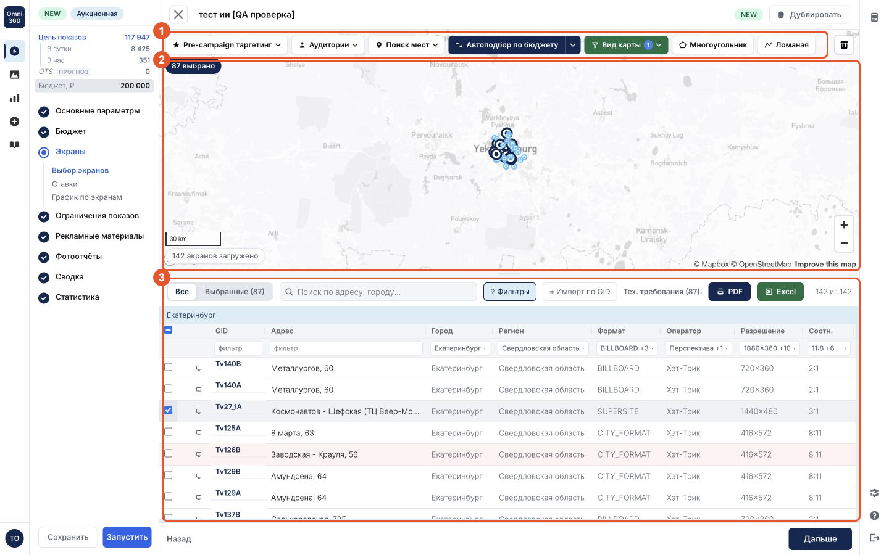
1 панель инструментов подбора. 2 карта. 3 таблица того же инвентаря. Карта и таблица — два вида на один и тот же набор экранов: что вы отметили на карте, то же отметится в таблице.
Экраны в кампанию попадают только отсюда. Дальше — семь способов их набрать; все они работают с одним и тем же списком, разница только в том, как вы его сужаете.
Инструменты подбора
Вручную по карте и таблице — фильтры и точечный выбор, когда нужен контроль над каждым экраном.
Аудитории — готовые портреты (домохозяйки, автомобилисты, студенты и т.п.), быстрый подбор по аффинитивности без ручной работы с DMP.
Pre-campaign таргетинг — точнее «Аудиторий»: свои DMP-сегменты (сейчас источник один — VK) и порог скора, когда портрет клиента нестандартный. Система считает каждому экрану «скор» — насколько по данным VK вокруг него сконцентрирована выбранная аудитория; ползунок «Мин. скор, % от макс.» задаёт порог отсечения от самого высокого скора среди подходящих экранов: чем выше порог, тем уже и точнее адресная программа, но тем меньше в ней экранов.
Поиск мест — вкладка «Поиск 2ГИС» ищет сети и категории только в той области карты, что сейчас видна на экране — сначала выберите город или подведите карту к нужному месту, иначе поиск ничего не найдёт. Вкладка «Адрес/координаты» — свой список текстом, по одному адресу или координатам «широта, долгота» на строку, форматы можно смешивать. Радиус — от 50 до 10 000 м с шагом 50 м. Если нужен более широкий охват (город целиком, до 40 км) или заведомо полный список объектов сети — быстрее собрать его во внешнем инструменте «Подбор адресов через 2ГИС» из панели инструментов отдела, а результат загрузить обратно как POI — списком адресов или координат. GID этот инструмент не отдаёт.
Многоугольник / ломаная — область или маршрут произвольной формы.
Автоподбор по бюджету — быстрый набор в рамках бюджета; «Параметры автоподбора» уточняют строгость формата, географию (центр/периферия/весь город), направление потока и равномерность по районам.
Импорт по GID — вручную или файлом XLS/XLSX, если адресная программа уже готова у клиента или оператора.
Способы комбинируются: например, автоподбор → ручная правка на карте → фильтр «Только с ОТС», если клиенту важно, чтобы экраны передавали OTS.
Как выглядят панели этих инструментов
Все четыре открываются кнопкой в той же верхней панели и перекрывают карту, пока вы их не закроете.
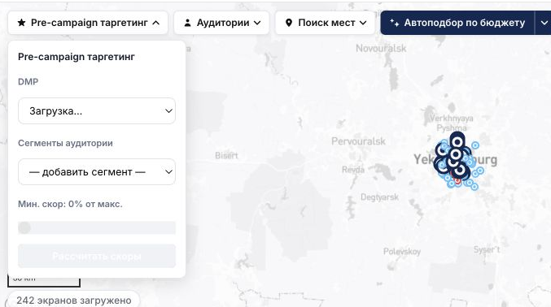
Pre-campaign таргетинг. Порядок сверху вниз: источник DMP → сегмент аудитории → ползунок «Мин. скор, % от макс.» → «Рассчитать скоры».
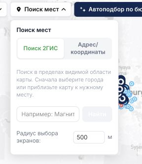
Поиск мест. Вкладка «Поиск 2ГИС» ищет только в видимой области карты, вкладка «Адрес/координаты» принимает свой список. «Радиус выбора экранов» — то, насколько далеко от каждой точки набирается инвентарь.
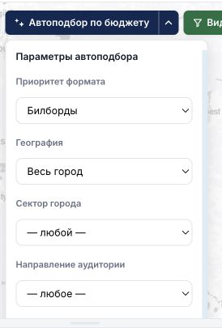
Параметры автоподбора по бюджету. Приоритет формата, география (весь город / центр / периферия), сектор и направление аудитории. Без заполненного бюджета кампании кнопка автоподбора недоступна.
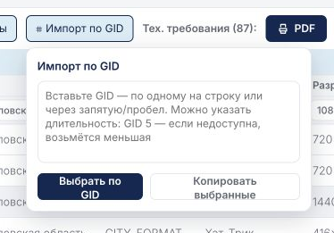
Импорт по GID. Список GID — по одному на строку или через запятую. Здесь же подсказка про длительность: «GID 5» — если пятисекундного слота у экрана нет, возьмётся меньший.
Приоритетные операторы
Если бриф клиента не требует конкретного оператора, при прочих равных в первую очередь берите инвентарь приоритетных операторов — актуальный список уточняйте у руководителя, аккаунт-менеджера или в отделе продаж. Операторы заметно различаются между собой: как передают ФО (автоматически, вручную по запросу, фотографом с земли), какие длительности слотов поддерживают, готовы ли на ПГ/АГ, есть ли разделение на дневной/ночной эфир. Не переносите условия одного оператора на другого «по аналогии» — уточняйте по каждому отдельно.
Ставки
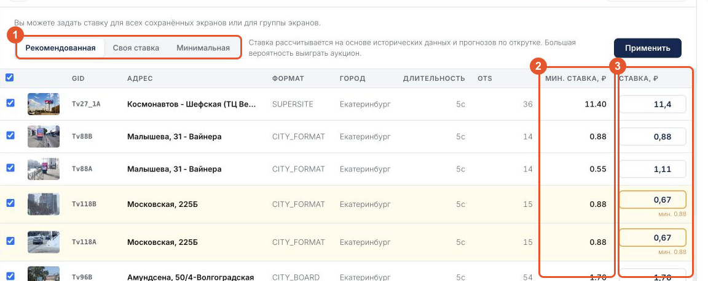
1 переключатель массовой простановки: «Рекомендованная», «Своя ставка», «Минимальная» — применяется ко всем сохранённым экранам кнопкой «Применить». 2 «Мин. ставка, ₽» — порог оператора, его вы не задаёте. 3 «Ставка, ₽» — то, с чем вы идёте в аукцион; жёлтым подсвечены строки, где заданная ставка оказалась ниже рекомендованной — под полем система дописывает минимум оператора.
Минимальная — порог оператора, ниже которого запуск заблокирован. Рекомендованная — по историческим успешным выходам. Ставка — то, с чем вы идёте в аукцион.
Можно применить ко всем сохранённым экранам, к группе или к отдельной строке/слоту.
Ловушка минимальной ставки
Ставка, равная минимальной, почти не выигрывает аукцион — минимум может ещё и плавать вместе с условиями аукциона. Отдельно у оператора Russ Outdoor минимальная ставка не фиксирована, а динамическая: она зависит от того, сколько человек находится перед экраном в конкретный момент, — поэтому у Russ минимум может заметно отличаться в разное время суток, и ставку «с запасом» стоит проверять чаще, чем у операторов с фиксированным порогом. Дробную часть указывайте через точку: 1.5, не 1,5.
Бюджет, НДС и равномерность
Все ставки, минимальные пороги и лимиты — без НДС. НДС 22% считается системой отдельно поверх бюджета клиента, не прибавляйте его к ставке вручную.
Дневной и часовой лимиты не увеличивают общий бюджет, а лишь ограничивают темп открутки в течение периода.
Общий/дневной/часовой максимумы показов или OTS плюс интервал между показами — то, что реально даёт ровную открутку. «Оптимальная модель» переносит недобранный остаток на следующий интервал.
Как говорить о прогнозе с клиентом
Прогноз — приблизительная оценка, не гарантия и не оферта. Фактический результат зависит от конкуренции в аукционе, доступности экранов и графика. В RTB гарантии выхода нет по определению модели.
Бюджет клиента без НДС — 200 000 ₽. Сколько составит итоговая сумма с НДС 22%?
Клиент просит собрать АП вокруг сети своих 40 точек, для которых у вас есть только адреса. Каким инструментом подбора удобнее всего воспользоваться?
Всё описанное выше — это подбор экранов внутри уже созданной кампании. Но черновой медиаплан для клиента часто нужно собрать быстрее и до того, как заводить кампанию в кабинете — для этого есть отдельный веб-инструмент Планировщик (вход — тот же логин и пароль, что в DSP). Бриф собирается в пять шагов: География (города/регионы или готовый список GID) → Период → Экраны → Адреска → Цели. Планировщик отдаёт готовый черновой план с прогнозом ещё до того, как вы создали саму кампанию — его удобно использовать на созвоне с клиентом или для быстрой прикидки нескольких вариантов размещения, а потом уже переносить финальный вариант в кампанию.
Соберите учебную адресную программу двумя разными инструментами (например, «Поиск мест» и «Автоподбор по бюджету»), сравните результат и опишите, чем они отличались. Отдельно соберите тот же бриф в Планировщике и сравните черновой план с тем, что получилось в кампании.
Практическое задание — выполняется в тестовом кабинете.
Скопировано — вставьте руководителю в чат/тикет
Этап 3
Креативы и операторы
Самая частая причина сорванного старта — креатив, не прошедший модерацию вовремя. Дальше — как собрать запись креатива, какие документы просят операторы и как задавать им вопросы в чате.
М7
Креативы: запись, файлы, подрядчики, модерация
Провести креатив от загрузки до статуса «Согласован» у всех операторов АП.
Справка · Креативы
Модуль готовит к задаче Т4 «Загрузка и согласование креативов».
Что такое запись креатива
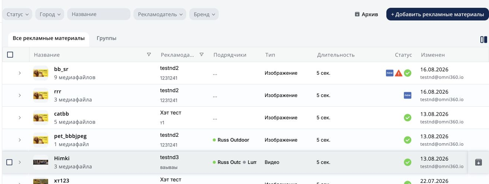
Список креативов: подрядчики, тип, длительность и статус каждой записи.
Запись — одна карточка, внутри которой лежит один или несколько файлов для разных форматов и операторов. К кампании привязывается запись целиком, система сама подбирает подходящий и одобренный файл под конкретный экран.
Тип и длительность задаёт первый загруженный файл записи. Если позже добавить файл другого типа или длительности, кампании всё равно будут использовать значения первого файла — для другого хронометража или типа заводите отдельную запись.
Записи живут отдельно от кампаний — можно завести креатив до появления РК.
Указывать рекламодателя и бренд в записи не обязательно. Но если указали — запись потом можно привязать только к кампаниям с тем же рекламодателем/брендом (та же ловушка, что в М4). Если креатив универсальный и должен подходить любой кампании — оставьте оба поля пустыми.
Так же сужает и регион: если у записи указан регион, её по-прежнему можно привязать к любой кампании, но крутиться креатив будет только в этом регионе и нигде больше. Регион у записи имеет смысл указывать только для оператора Russ Outdoor — у остальных операторов это поле не используется.
Подрядчики и файлы
Добавить подрядчиков можно вручную (когда РК ещё нет) или «из кампании» — тогда операторы подтянутся из уже собранной адресной программы автоматически, но нужны заполненные рекламодатель и бренд в записи.
Если у подрядчика нет файла — текущий материал не подходит его экранам по разрешению или формату; нужен дополнительный совместимый файл.
Когда вы загружаете исправленный файл того же разрешения взамен отклонённого, он не становится отдельной, никак не связанной строкой — система помечает его версией v2, v3 и так далее внутри того же слота. Открыв историю версий, видно, за что отклонили предыдущую версию, и не приходится гадать или спрашивать заново.
После отправки на модерацию каждому файлу присваивается SSP ID — по нему удобно искать запись в общем списке и вести переписку с оператором.
Модерация
Отправляется вся запись целиком или отдельный файл. Статусы: «Новый», «На модерации», «Согласован», «Отклонён».
При отклонении — прочитать комментарий, подготовить исправленный файл, добавить его в ту же запись, отправить повторно.
Срок модерации зависит от оператора и его рабочего графика — отправляйте материалы заранее, с запасом на возможное отклонение и правку.
Удаление
Отдельный файл обычно удаляется только в статусе «Новый». Возможность удалить всю запись зависит от того, привязана ли она к бренду и кампаниям — перед удалением проверяйте связи в карточке.
В записи первым загружен статичный файл 5 секунд. Позже нужно добавить видеоролик 10 секунд для тех же операторов. Что произойдёт, если просто добавить его в ту же запись?
У записи указан регион. Как это скажется на её использовании?
Файл отклонили, вы загрузили исправленную версию того же разрешения в ту же запись. Что произойдёт?
Зачем нужен SSP ID?
Создайте учебную запись креатива: загрузите файл (что грузим — статика или видео, минимум двух разных разрешений), укажите подрядчиков — сначала вручную (когда учебной РК ещё нет), затем «из кампании» на существующей учебной РК (куда грузим — к какой записи и какие операторы подтянутся из её АП автоматически). Опишите, в каком случае какой способ добавления подрядчиков удобнее.
Практическое задание — выполняется в тестовом кабинете.
Скопировано — вставьте руководителю в чат/тикет
М8
Сопроводительные документы и работа с операторами
Понимать, какой документ нужен под какой макет, и правильно оформлять запрос.
Справка · Креативы · Сопроводительные документы
Модуль готовит к задаче Т3 «Коммуникация с операторами».
Когда нужны документы
Оператор может запросить подтверждения прав и юридической корректности рекламы — особенно часто для изображений людей, чужих товарных знаков, иностранных слов в товарном знаке, недвижимости, финансовых и медицинских услуг.
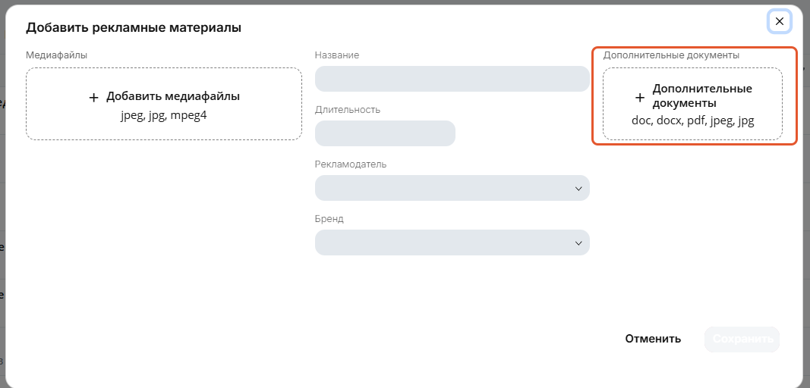
Документы прикладываются прямо в форме создания записи креатива — обведённое поле «Дополнительные документы» справа (doc, docx, pdf, jpeg, jpg).
На макете есть
Обычно нужен
Изображения людей — фото, видео, сток, ИИ-генерация
Заверение общее или на физлицо
Чужие товарные знаки
Согласие на использование ТЗ
Товарный знак с иностранными словами
Свидетельство о регистрации ТЗ
Недвижимость
Наименование застройщика и источник проектной декларации на макете
Финансовые услуги
Лицензия или свидетельство о регистрации
Медицинские услуги, лекарства
Лицензия на деятельность / регистрационное удостоверение
Актуальный порядок отправки уточняйте у Omni360
Для отдельных операторов документы могут запрашиваться дополнительно по email отдельно от загрузки в кабинете. Конкретный адрес, шаблон заверения и требуемые реквизиты меняются — перед отправкой спрашивайте актуальный порядок в чате с самим оператором и не полагайтесь на шаблон из старой переписки.
Согласование не переносится между закупкой в эфире и программатиком
У одного и того же оператора «барабан» (классическая эфирная закупка) и программатик обычно модерирует разный отдел. Из-за этого ролик, который уже одобрили для эфира, программатик может отклонить заново — и наоборот. Если ссылаетесь на прежнее согласование в переписке, это ускоряет рассмотрение, но не гарантирует, что оператор просто повторит старое решение.
На макете указано название ЖК и застройщик, есть ссылка на проектную декларацию. Фото людей на макете нет. Какой документ, скорее всего, не понадобится?
На макете товарный знак написан латиницей. Что обычно нужно дополнительно?
Ролик уже согласован в барабане у оператора. Вы отправляете его же на программатик у того же оператора. Что произойдёт?
Опишите три собственных сценария макета (не нужен готовый дизайн — достаточно описания): с фото человека, с чужим товарным знаком, с недвижимостью. Для каждого назовите нужный документ и у кого вы уточните актуальный процесс его отправки конкретному оператору.
Скопировано — вставьте руководителю в чат/тикет
Этап 4
Запуск, аналитика и гарантиды
С этого этапа действия уже необратимы: запуск кампании и отправка гарантида на модерацию назад не откатываются. Поэтому здесь порядок один и тот же для всех трёх моделей закупки — сначала пре-флайт проверка (задача Т5), и только потом сама кнопка запуска.
М9
Сборка RTB-кампании: шаги формы и запуск
Пройти форму создания кампании и понимать, что после запуска уже не поменять.
Справка · Создание аукционной кампании (RTB)Справка · Запуск, остановка и редактирование
Модуль готовит к задаче Т5 «Настройка кампаний перед запуском».
Три способа создать кампанию
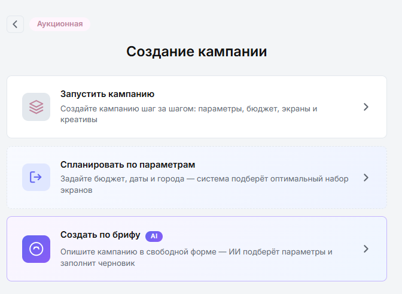
Появляется сразу после выбора типа «Аукционная».
«Запустить кампанию» — заполнить все шаги формы вручную. Основной способ для нестандартных размещений.
«Спланировать по параметрам» — задать бюджет, даты и города, система предложит набор экранов.
«Создать по брифу AI» — описать задачу свободным текстом; если рекламодатель или бренд распознаны неоднозначно, помощник предложит выбрать их из справочников. Явно заданные город, период, бюджет и обязательный формат не подменяются автоматически: если условие невыполнимо, помощник обязан предупредить и запросить решение, а не тихо скорректировать бриф.
Во всех трёх случаях результат — черновик, который нужно проверить и дособрать вручную, а не готовая к запуску кампания.
Шаги формы
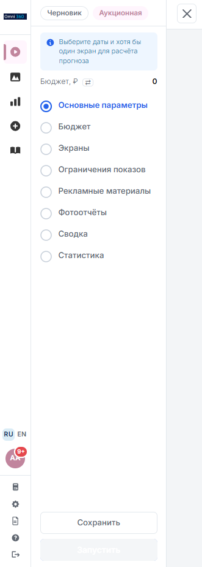
Список шагов слева — заполненные помечаются автоматически.
Основные параметры → Бюджет → Экраны → Ограничения показов → Рекламные материалы → Фотоотчёты → Сводка → Статистика. Сохранить кампанию можно, только когда на «Основных параметрах» заполнены обязательные поля, а на «Экранах» выбран хотя бы один экран.
Что нельзя изменить, если кампания хоть раз запускалась
Если кампания когда-либо запускалась — в том числе сейчас остановлена или на паузе — тип ставки и надбавка остаются заблокированными навсегда. Остальные доступные поля редактируются по обычным правилам текущего статуса: «Пауза» → внести правки → сохранить → снова запустить. Забыть последний шаг — значит оставить активную кампанию на паузе.
Индикаторы шагов
Галочка у шага показывает, что обязательные данные заполнены, синий индикатор — текущий шаг. Это не замена финальной проверки: перед запуском всё равно смотрите «Сводку» целиком.
Кампания была запущена, потом остановлена на паузу для правок. Можно ли поменять тип ставки с «по выходам» на «по OTS»?
Вы внесли правки в остановленную кампанию и сохранили их. Кампания снова начнёт откручиваться?
Помощник «Создать по брифу AI» не смог однозначно понять, какой бюджет вы имели в виду. Что он должен сделать?
Создайте черновик кампании двумя разными способами («Запустить кампанию» вручную и «Спланировать по параметрам» или AI-бриф) и сравните, что форма заполнила сама, а что пришлось доделывать руками.
Практическое задание — выполняется в тестовом кабинете.
Скопировано — вставьте руководителю в чат/тикет
М10
Статистика, отчёты и фотоотчёты
Собрать клиенту точный отчёт и не перепутать между собой инструменты выгрузки статистики.
Справка · Статистика и выгрузки
Модуль готовит к задачам Т6 и Т7 — фотоотчёты и анализ кампаний.
Сводные показатели и карта
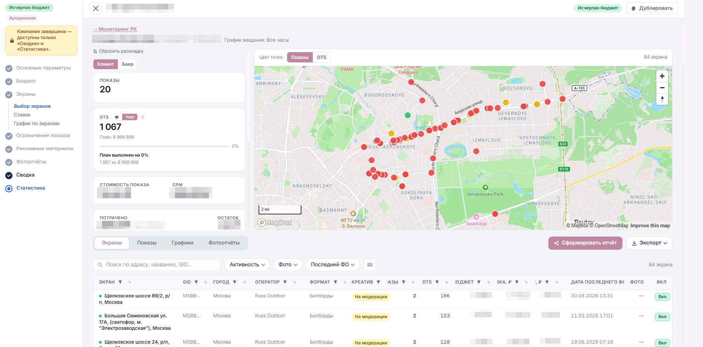
Верх страницы «Статистика»: слева — показы, OTS и план/факт, справа — те же показы на карте. Переключатель «Клиент / Баер» над блоком меняет, в чьих деньгах показаны суммы.
Сверху — показы, OTS, CPM, расход, остаток бюджета, темп открутки; если у кампании несколько операторов — отдельная разбивка «По подрядчикам». В режиме «Последний час» сравнение с темпом кампании скрывается — отдельного часового плана нет.
«Фотоотчёт за сегодня» различает «снимков нет» и «снимки получены, но фото ещё не выбрано» — во втором случае доступен ручной выбор или автоподбор.
Четыре вкладки под сводкой
Под сводкой — четыре вкладки на одну и ту же кампанию, каждая отвечает на свой вопрос. Кнопки «Сформировать отчёт» и «Экспорт» справа от вкладок доступны с любой из них.
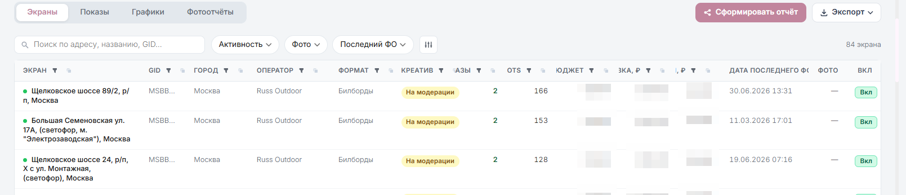
Экраны — «какие экраны отработали». Строка на экран: адрес, GID, оператор, формат, статус креатива, выходы, OTS, дата последнего фотоотчёта.
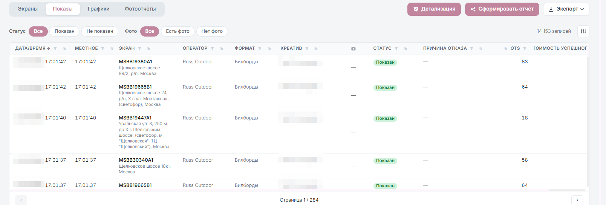
Показы — «что именно происходило и когда». Строка на каждый выход, с колонкой «Статус» («Показан» / «Не показан») и «Причина отказа». Фильтры сверху отделяют показанные от отклонённых. «Детализация» — это кнопка на этой вкладке, а не отдельная вкладка.
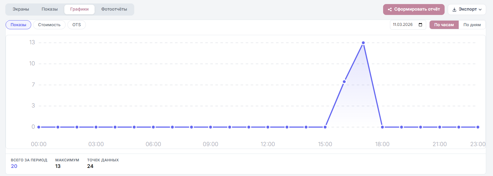
Графики — «ровно ли идёт открутка». Переключатели слева выбирают метрику (показы, стоимость, OTS), справа — дату и разрез «По часам / По дням».
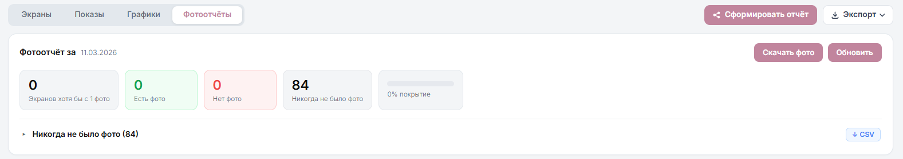
Фотоотчёты — «есть ли чем отчитаться перед клиентом». Покрытие за выбранную дату: сколько экранов с фото, сколько без, сколько не давали фото ни разу, и общий процент покрытия.
Смена креатива ломает выборку
Если в фильтре графиков/статистики остались отмечены только текущие (активные) записи креативов, часть истории по прежним креативам может не попасть в выборку. Для полной картины отметьте в фильтре все нужные записи.
Экспорт — не путайте два разных инструмента
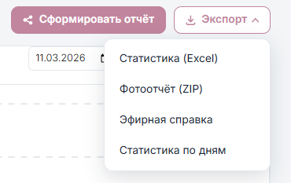
Меню «Экспорт» над таблицей статистики — четыре разных файла. Слева от него, вплотную, стоит кнопка «Сформировать отчёт»: это не пятый пункт того же меню, а другой инструмент (см. ниже).
Меню «Экспорт» над таблицей статистики: Эфирная справка (за период или по дням), Статистика (Excel) — выгружает только отфильтрованное и видимые колонки, Фотоотчёт (ZIP), Статистика по дням. Ссылка на готовый файл приходит в уведомления.
Кнопка «Сформировать отчёт» — отдельный инструмент: конструктор публичной ссылки на выбранные фотографии для клиента. Это не эфирная справка и не замена ей.
Клиенту нужен полный Excel со статистикой показов за весь период кампании, а в таблице сейчас включён фильтр по последней неделе. Что произойдёт при экспорте прямо сейчас?
Клиент просит публичную ссылку с подборкой фото с экранов. Какой инструмент нужен?
В фильтре графиков отмечены только текущие (активные) записи креативов, а по кампании креативы менялись. Что произойдёт?
Выгрузите эфирную справку общую и по дням на учебной кампании и опишите, чем отличаются файлы. Отдельно сформируйте публичную ссылку с фотографиями через «Сформировать отчёт» и объясните разницу с эфирной справкой.
Практическое задание — выполняется в тестовом кабинете.
Скопировано — вставьте руководителю в чат/тикет
М11
Гарантиды: ПГ и АГ
Собрать ПГ и АГ и знать, что в них уже не отыграть назад.
Справка · ПГ и АГ: гарантированные размещения
ПГ (программатический гарантид)
Создаётся в той же общей форме создания РК, что и RTB, с типом «Прог. гарантид»: основные параметры и бюджет, выбор экранов, график и ограничения показов, рекламные материалы, сводка. Отличие от RTB — фиксированная стоимость размещения вместо аукционной ставки. Править ПГ после запуска нельзя: объём и цена согласованы заранее, и это как раз то, за что клиент платит фиксированную стоимость. Всё, что нужно поменять, меняется до запуска.
АГ (автогарантия) — отдельная форма
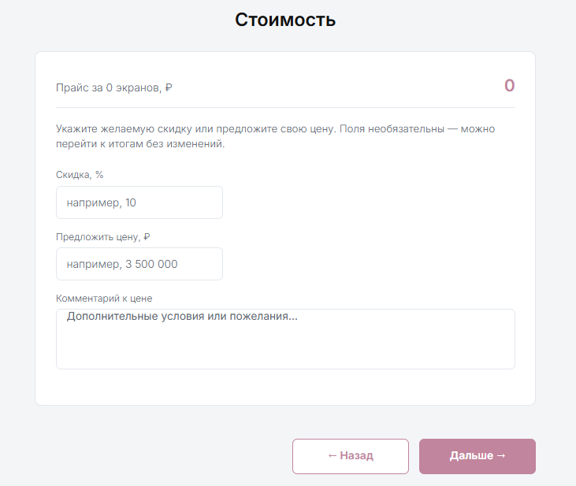
Шаг «Стоимость». 1 «Скидка, %» и 2 «Предложить цену, ₽» взаимоисключающие: заполнение одного очищает другое.
Основные параметры. Название, рекламодатель и связанный с ним бренд (можно создать новый прямо здесь), даты начала/окончания (начало не в прошлом, конец не раньше начала), частота выхода — «в каждом блоке» или «через блок».
Экраны. Выбор конкретных экранов для фиксированного размещения, проверка адресов, форматов и доступности на период.
Стоимость. Система показывает прайс за выбранный набор экранов. Дополнительно — либо скидка в процентах, либо предложить свою цену (поля взаимоисключающие: заполнение одного очищает другое), плюс комментарий к цене.
Итоги. Проверка периода, количества экранов, цены; раскрыть список экранов и сверить GID, город, адрес, формат, сторону, месячный прайс и бюджет по каждому. Дальше — «Сохранить черновик» или «Отправить на модерацию».
Условия фиксируются на отправке
Отправка на модерацию — не подтверждение немедленного запуска, но и не черновик: даты, набор экранов и цену стоит перепроверить именно перед этим шагом. Отмена уже согласованного гарантированного размещения обычно требует отдельной договорённости с оператором, а не одной кнопки в интерфейсе — уточняйте условия у Omni360 до отправки, а не после.
В шаге «Стоимость» формы АГ вы уже указали скидку 10%. Можно ли дополнительно вписать в поле «Предложить цену» свою сумму?
Клиент хочет отменить уже согласованное АГ-размещение. Достаточно ли нажать одну кнопку в интерфейсе?
Где создаётся ПГ-кампания?
Соберите учебную АГ-кампанию до шага «Итоги» (не отправляя на реальную модерацию без подтверждения руководителя). Опишите, чем шаг «Стоимость» в АГ отличается от работы со ставками в RTB.
Практическое задание — выполняется в тестовом кабинете, только с руководителем.
Скопировано — вставьте руководителю в чат/тикет
Часть II
Восемь рабочих задач
Задачи Т1–Т7 выстроены в порядке жизненного цикла кампании — от подготовки требований до разбора результатов. Т8 стоит особняком: она про то, что происходит ещё до брифа, при подключении нового клиента, — её можно читать и первой. У каждой задачи — открытое поле для отчёта руководителю с результатом выполнения.
До макетов
Подготовка ТТ
Легко
ВходСогласованная или черновая адресная программа
ВыходСводка требований для дизайнера: разрешения, хронометраж, форматы файлов
Порядок
Открыть таблицу выбора экранов кампании.
Выгрузить «PDF / Excel» по текущему набору экранов.
Пройтись точечно по кнопке ТТ у нестандартных форматов — или собрать то же самое сразу по всей АП инструментом «Сбор технических требований» из панели инструментов отдела.
Выписать длительность слота из колонки в таблице — не из PDF оператора.
Если кнопка ТТ неактивна, а инструмент тоже не нашёл ссылку — спросить оператора в рабочем чате, а не подставлять требования «на глаз».
Свести всё в одну таблицу: формат → разрешения → хронометраж → тип файла.
Чек-лист перед передачей дизайнеру
Каждый формат в АП закрыт хотя бы одним разрешением.
Хронометраж взят из системы, а не из PDF оператора.
Учтено, что у одного экрана может быть несколько доступных слотов — чем длиннее слот, тем выше минимальная ставка.
Медиафасады: длительность и наличие эфира подтверждены оператором через Omni360.
В требованиях явно написано: видео без звука и без аудиоканалов.
Типичные ошибки
Взять длительность из общего PDF оператора. Отдать дизайнеру файл оператора «как есть», без сводки разрешений. Не заметить неактивную кнопку ТТ и уйти в работу с неактуальными требованиями.
Откуда брать хронометраж для сводки ТТ?
Приложите сводку ТТ по учебной АП из трёх форматов и минимум двух операторов, опишите, что было нестандартным, и что сказал руководитель, проверив её.
Скопировано — вставьте руководителю в чат/тикет
Планирование
Подготовка медиапланов
Средне
ВходБриф: бюджет, гео, период, целевая аудитория, KPI
ВыходАП со ставками, графиком и прогнозом, который можно защитить
Порядок
Прикинуть порядок цифр в Планировщике (см. М6): черновой прогноз по бюджету, гео и периоду ещё до захода в саму кампанию.
Определить тип ставки. По OTS — только там, где экраны его передают; indoor отпадает сразу.
Заполнить основные параметры и бюджет: сумма клиента без НДС, надбавка, лимиты на сутки и час.
Собрать АП: автоподбор по бюджету, «Поиск мест» или импорт по GID — с ручной доводкой на карте.
Включить нужные фильтры («Только с ОТС», «Только активные»), если это в требованиях к отчётности.
Проставить ставки: начать с рекомендованной, при необходимости поднять минимальную на процент.
Задать график вещания, если 24/7 не подходит.
Посчитать прогноз в двух-трёх комбинациях параметров и выбрать сценарий для клиента.
Чек-лист медиаплана
Бюджет указан без НДС, отдельно виден расчёт с НДС 22% и сходится с ожиданиями клиента.
Месячный лимит рекламодателя не превышен с учётом других его кампаний.
В ставках точка, а не запятая, и ни одна ставка не равна минимальной.
Прогноз в презентации назван прогнозом, а не гарантией.
Типичные ошибки
Собрать красивую АП и забыть про суточные лимиты — бюджет выгорит за первые дни. Перепутать сумму с НДС и без НДС при защите бюджета перед клиентом. Поставить прайм-тайм и не пересчитать прогноз.
Медиаплан собран без суточного лимита показов. Чем это грозит?
Опишите два собранных медиаплана по разным брифам (один по выходам, один по OTS): какими инструментами собирали АП, почему выбрали такие ставки и график, как обосновали перед руководителем. Отдельно опишите, что изменилось, когда пересобрали один из планов после правки бюджета клиента вдвое.
Скопировано — вставьте руководителю в чат/тикет
Сквозная — всю кампанию
Коммуникация с операторами
Средне
ВходВопрос, который нельзя закрыть внутри платформы
ВыходОтвет оператора или подтверждённые условия
Внутри кабинета канала к оператору нет — вся переписка идёт в рабочих чатах с операторами. Чаты общие: закреплённых за конкретным оператором людей у нас нет, писать может любой из отдела ведения РК, и отвечают всем одинаково. Поэтому не ждите, что «вопрос передадут кому-то ответственному», — задаёте его вы сами и вы же следите за ответом.
Если чата с нужным оператором ещё нет — попросите коллег из отдела SSP его создать: интеграции с операторами заводят они. Чем точнее запрос, тем быстрее ответ — шаблон ниже.
Частые поводы написать
Кнопка ТТ неактивна — оператор не передал актуальные требования.
Нужно уточнить длительность слота или наличие свободного эфира на медиафасаде — в системе этого не видно.
Креатив отклонён, комментарий непонятен или спорен.
Нужен актуальный шаблон/адрес для сопроводительных документов конкретного оператора.
Согласование цены и условий по ПГ/АГ.
Инвентарь недоступен к покупке — подключение заводят коллеги из отдела SSP.
Есть сомнения, что экраны оператора реально показывают эфир или передают ФО — нужен тест.
Тест экранов оператора
Если есть сомнения в работоспособности конкретных экранов, вещании или передаче ФО — перед тем как ставить на них полноценную кампанию клиента, запускается небольшой тест: создаётся тестовая РК на символическую сумму (около 100–300 ₽) на тестовом рекламодателе, в адресную программу берутся именно те экраны, которые нужно проверить. После короткой прокрутки смотрите статистику — были ли по экрану ставки/показы вообще, — и результат приносите оператору в чат. Закладывайте на такой тест минимум пару рабочих дней: очередь у оператора и загрузка внутри отдела не всегда позволяют сделать это день в день.
Шаблон запроса
Поле
Что писать
Идентификатор
SSP ID файла, GID экрана, название и номер РК — то, по чему оператор найдёт объект
Оператор
Кому адресован вопрос
Суть
Одно предложение: что нужно получить или подтвердить
Срок
Дата старта кампании — от неё считается приоритет
Проверено
Что вы уже посмотрели сами, чтобы вопрос не вернулся к вам же
Типичные ошибки
Написать «креатив отклонили, что делать» без SSP ID. Пообещать клиенту срок ответа оператора, не заложив выходные и загрузку очереди модерации. Ссылаться на согласование в другой закупочной модели без предупреждения о риске.
Вам нужно уточнить у оператора длительность слота, а рабочего чата с ним у нас ещё нет. Что делать?
В запросе оператору вы не указали SSP ID/GID/номер РК. Чем это грозит?
Оформите по шаблону три реальных или учебных запроса оператору и приложите их. Опишите, по каким из них уже получили ответ (в частности — по ТТ и по отклонённому креативу), и что уточнили по актуальному порядку отправки документов хотя бы одному оператору.
Скопировано — вставьте руководителю в чат/тикет
До запуска, с запасом в несколько дней
Загрузка и согласование креативов
Средне
ВходГотовые макеты и список операторов АП
ВыходЗаписи креативов со статусом «Согласован» у всех нужных операторов
Порядок
Сгруппировать макеты: одна запись = один тип файла + одна длительность (заданная первым загруженным файлом).
Создать запись: понятное название с датой, брендом и городом; звуковую дорожку выключить.
Добавить подрядчиков — вручную или «из кампании», если РК с АП уже есть.
Догрузить дополнительные файлы там, где у оператора нет подходящего файла.
Отправить на модерацию — всю запись или отдельные файлы.
Все нужные типы/длительности из АП закрыты отдельными записями.
У каждого оператора в блоке подрядчика есть файл.
Видео без аудиоканалов, тумблер звука выключен.
SSP ID файлов зафиксированы для переписки с операторами.
До старта кампании остаётся минимум несколько рабочих дней.
Типичные ошибки
Указать бренд в записи и потом не найти её при привязке к другой кампании. Добавить файл другого хронометража в существующую запись вместо создания новой. Отправить на модерацию в пятницу под понедельничный старт. Пытаться удалить файл, который уже на модерации.
Нужно добавить в кампанию видеоролик 15 секунд, а в записи уже есть статичный файл 5 секунд. Как правильно поступить?
Опишите, как провели запись с несколькими разрешениями через модерацию у двух операторов, как отработали хотя бы одно отклонение (если оно было) до статуса «Согласован», и какой комплект документов собрали и отправили под макет с изображением человека.
Скопировано — вставьте руководителю в чат/тикет
Перед запуском, необратимо
Настройка кампаний перед запуском
Сложно
ВходСобранная РК, согласованные креативы, утверждённый бюджет
ВыходКампания в статусе «Активна», которая откручивается ровно
Сложность выше, чем у соседних задач: здесь сходятся все предыдущие этапы, а часть решений после запуска уже не отыграть — особенно в ПГ и АГ.
Пре-флайт по шагам формы
Основные параметры. Даты корректны. Тип ставки выбран окончательно — после первого запуска не меняется, как и надбавка.
Бюджет. Бюджет клиента и баера сходятся с учётом надбавки, НДС 22% посчитан отдельно, лимиты на сутки и час заданы.
Экраны. Ставки выше минимальных, дробные — через точку. График вещания соответствует брифу.
Ограничения показов. Интервал между показами и максимумы за период заданы, если нужна ровная открутка.
Рекламные материалы. Креативы привязаны для каждой длительности/типа, видны на вкладке каждого оператора со статусом «Согласован».
Сводка. Ни одного креатива «на модерации» или «отклонён». Прогноз пересчитан после последней правки.
Финальные проверки перед кнопкой
График установлен корректно.
Ставки выше минимальных.
Лимиты соответствуют бюджету и прогнозу.
Для каждой стороны есть подходящий согласованный креатив.
Необратимое
Тип ставки и надбавка блокируются после первого запуска в любой модели. Удалённый черновик не восстанавливается. В ПГ и АГ отмена уже согласованного размещения обычно требует отдельной договорённости с оператором, а не одной кнопки в интерфейсе. После правок кампанию надо снова запустить — иначе она так и останется на паузе.
Отложенный запуск
Кампанию можно запустить заранее: показы всё равно начнутся в дату начала и по графику вещания. Это безопаснее, чем запускать в 9 утра в день старта.
Что из перечисленного нельзя отыграть назад ни в одной из трёх моделей закупки?
После правок в активной RTB-кампании вы сохранили изменения. Кампания продолжает откручиваться?
Пройдите пре-флайт по чужой (учебной) кампании, найдите минимум две ошибки и опишите их. Затем запустите свою кампанию под наблюдением руководителя, подтвердите статус «Активна», внесите в неё правку и опишите, как вернули её в работу.
Практическое задание — выполняется под наблюдением руководителя.
Скопировано — вставьте руководителю в чат/тикет
Во время и после открутки
Выбор и запрос фотоотчётов
Легко
ВходИдущая или завершённая кампания
ВыходФото в отчёте клиенту и архив ФО
Задача несложная, но с дедлайном: не все экраны оснащены фотоловушками, а срок доступности снимков ограничен, поэтому пропущенное окно не восстановить.
Сколько хранятся фото
У оператора Russ Outdoor снимки с фотоловушек хранятся 2 недели. У остальных операторов (а их в парке около 150) срок у каждого свой и общий диапазон тут не назвать — где-то счёт на сутки, где-то дольше; конкретный срок уточняйте у оператора заранее, а не полагайтесь на усреднённую цифру. Отдельно: то, что успело дойти и сохраниться в нашей системе, на серверах Omni360 хранится 30 дней — после этого исходник у нас тоже пропадает, даже если у оператора его и не было изначально.
Порядок
На шаге «Фотоотчёты» формы создания РК: «Сохранить все фотоотчёты» либо «Настроить параметры фотоотчётов» с ограничением количества на пару «экран — креатив».
Во время открутки: раздел «Статистика» → «Фотоотчёт за сегодня» → «Статистика» — проверить покрытие и проблемные экраны, при необходимости выбрать фото вручную или через автоподбор.
Для клиента: «Сформировать отчёт» — выбрать фотографии, настроить вид получателя и поделиться публичной ссылкой.
Для архива: «Экспорт» → «Фотоотчёт (ZIP)» с фильтром по датам, ссылка приходит в уведомления.
Если фотоловушек на нужных экранах нет — обсудить с клиентом ожидания заранее: 100%-ное покрытие фото по всей АП не гарантируется.
Типичные ошибки
Пообещать клиенту фото по всей АП: не все экраны оснащены фотоловушками. Перепутать «Сформировать отчёт» (публичная ссылка на подборку фото) с эфирной справкой. Затянуть с выгрузкой архива дольше 30 дней — после этого срока фото пропадает даже из системы Omni360.
Когда своих фотоловушек нет: заказ выезда фотографа
На части конструкций (билборды, ситиборды и другие форматы без камеры) автоматического фотоотчёта не будет — фото заказывается отдельно у подрядчика, который присылает на адрес живого фотографа. Пример такой работы — агентство Grace Outdoor.
Отправить подрядчику запрос ФО по конкретным адресам с желаемой датой/временем выезда.
Подрядчик подтверждает исходя из того, где сейчас физически находится фотограф, — если он в другом городе, выезд сдвигается на несколько дней, это нормально и не зависит от вас.
Перед выездом убедитесь, что размещение уже стартовало. Если по данным клиента/кампании конструкции ещё нет в эфире — предупредите подрядчика и отмените выезд по этим адресам заранее, иначе оплатите фотографу пустую поездку.
Получить промежуточный отчёт по ссылке-мониторингу от подрядчика и сверить с тем, что нужно клиенту.
Внеплановые и повторные выезды стоят денег
Обычный график съёмки — часть договорённостей с подрядчиком и в него заложен. А вот повторный выезд на те же адреса или съёмка в узком нестандартном окне времени (когда фотографу нужно успеть строго в конкретный час) — это отдельная платная услуга, подрядчик считает её за адрес. Прежде чем обещать клиенту точную дату повторной съёмки, уточните у подрядчика стоимость.
Через 40 дней после открутки клиент просит фото с экранов, которые дошли до системы Omni360. Успеете достать?
Подрядчик уже едет к экрану без фотоловушки, но вы узнали, что размещение ещё не стартовало. Что делать?
Настройте фотоотчёты на учебной кампании (укажите режим «За кампанию» или «Ежедневно»), отберите фото вручную и сформируйте публичную ссылку для клиента. Опишите разницу между этой ссылкой и архивом ZIP.
Скопировано — вставьте руководителю в чат/тикет
По ходу и на закрытии
Анализ кампаний
Средне
ВходИдущая кампания и её статистика
ВыходРешение по оптимизации или отчёт клиенту с выводами
Что смотреть по ходу кампании
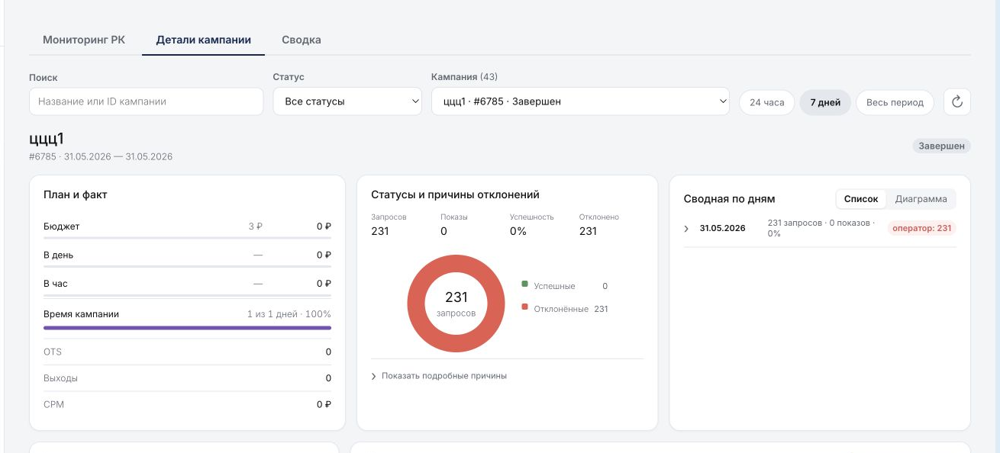
«Сводка» → «Детали кампании»: план и факт, причины отклонений, сводная по дням.
Раздел «Сводка» → «Детали кампании»: план и факт, причины отклонений, лимиты и рекомендации по конкретной РК.
Вкладка «Показы»: доля отклонённых выходов и причины. Много проигрышей в аукционе — сигнал поднять ставку.
Вкладка «Графики»: попадаем ли в заявленный график и ровно ли расходуется бюджет.
Вкладка «Экраны» и карта: какие экраны реально работают, а какие висят мёртвым грузом.
Что с этим делать
Ставки ниже конкурентных — поставить на паузу, поднять, запустить обратно.
Бюджет выгорает к обеду — задать или ужесточить часовой лимит, включить оптимальную модель.
Показы идут вне нужного времени — сузить график вещания.
В «Деталях кампании» — блок «Рекомендации для клиента» уже формирует краткое резюме периода, «Скопировать текст» переносит его в черновик отчёта.
Отчёт клиенту
Эфирная справка — общая за период или по дням, выбирайте тип осознанно.
Экспорт статистики в Excel забирает только отфильтрованное и видимые колонки — проверьте фильтры перед выгрузкой.
Если креативы менялись, снимите отметки в фильтре, иначе увидите статистику только по активным записям.
Типичные ошибки
Считать все строки статистики показами — там есть и отклонённые выходы. Выгрузить Excel, забыв про включённый фильтр по дате, и отдать клиенту неполные данные.
В таблице статистики много строк с отклонёнными выходами. Можно ли считать все строки успешными показами?
Во время кампании креатив меняли, а в фильтре статистики отмечены только текущие (активные) записи. Что увидите в выгрузке?
Разберите завершённую или идущую учебную кампанию: назовите причины недолива (если есть) и предложите одну обоснованную оптимизацию, используя «Рекомендации для клиента» как основу. Опишите, что войдёт в полный отчёт клиенту: эфирная справка, статистика, фотоотчёты.
Скопировано — вставьте руководителю в чат/тикет
На старте, при подключении нового клиента
Типы клиентов: Self и Full
Средне
ВходКлиент подтвердил сотрудничество после презентации
ВыходПонятно, кто что делает по кампании, и для Self проведена встреча-обучение
До брифа и медиаплана нужно знать тип клиента: от него зависит, что делаете вы, а что клиент. В таблице ниже «отдел ведения РК» — это отдел ведения и оптимизации рекламных кампаний, то есть вы и ваши коллеги.
Self и Full: кто что делает
Self-клиент
Full-клиент
Медиаплан
Сначала отдел ведения РК или аккаунт, дальше клиент переходит на самостоятельные расчёты
Всегда отдел ведения РК
Сбор ТТ
Сам + помощь отдела ведения РК по запросу
Отдел ведения РК
Загрузка креативов, запуск, ведение
Сам
Отдел ведения РК
Доступ в кабинет
Полный, с ролью под задачу
Есть, но без права редактировать РК — видит цены, статистику, может выгружать данные
Отчётность
Смотрит сам в кабинете
Отдел ведения РК передаёт эфирную справку и фото в течение 3–5 рабочих дней после окончания РК
Как определяется тип
Условия формируются под конкретного клиента на этапе презентации. Если у клиента нет опыта в программатике — с большей вероятностью это Full. Если есть опыт в диджитале/программатике и ресурс самому вести кампании — обычно Self.
Первый запуск — всегда с нами
Даже у Self-клиента первый запуск всегда проходит с помощью отдела ведения РК: мы не готовим и не ведём его кампании на постоянной основе, а обучаем всем шагам — делаем расчёт по брифу, заводим кабинет, проводим встречу-обучение и мониторим первую кампанию (длинную — раз в неделю, короткую — на каждую четверть периода размещения) с фидбеком клиенту. Условие полностью самостоятельного ведения — это уже не первый запуск.
Встреча-обучение
Проводится для Self-клиентов перед первым запуском (для Full — по запросу, их работа в кабинете и так ограничена). Организуется в течение 3 рабочих дней после подтверждения запуска, занимает около часа.
В начале встречи спросите: успел ли клиент ознакомиться со справкой и кабинетом, есть ли конкретные вопросы по платформе, есть ли у него опыт работы в похожих DSP — это задаёт, сколько времени провести на базовых вещах, а сколько на нюансах.
На встрече показываете весь путь создания кампании: сбор адресной программы вручную и через импорт, создание записи креатива с загрузкой файлов, статистику на примере реальной кампании. Остальное — по запросам клиента.
Новый клиент раньше не работал с программатиком и не хочет держать в штате отдельного специалиста под это. Какой тип клиента вероятнее предложить?
Self-клиент запускается впервые. Кто готовит расчёт по брифу и заводит кампанию?
Опишите на своих словах разницу между Self и Full для нового сотрудника, который слышит эти термины впервые. Отдельно перечислите три вопроса, которые обязательно зададите клиенту в начале встречи-обучения, и почему именно они.
Скопировано — вставьте руководителю в чат/тикет
Часть III
Словарь
Минимум, без которого не получится ни разговор с оператором, ни письмо клиенту.
DOOH
Digital Out of Home — цифровая наружная реклама: билборды, экраны в метро, интерактивные конструкции.
outdoor / indoor
Улица против помещений. Определяет не тип конструкции, а где она стоит: экран на фасаде ТЦ — outdoor, а похожий экран в фойе того же ТЦ — уже indoor, хотя физически это два разных экрана.
DSP / SSP
Платформа со стороны спроса и со стороны предложения. Мы работаем в DSP OmniDSP, инвентарь приходит из SSP операторов.
RTB
Аукцион в реальном времени за право показать креатив в конкретный момент.
OTS
Opportunity To See — оценочное количество контактов с экраном. Передают не все экраны; indoor — как правило, никогда.
АП
Адресная программа — список экранов кампании.
GID
Уникальный идентификатор экрана/стороны в системе. Используется при импорте и в переписке с оператором.
POI
Точка интереса — адрес или координата, вокруг которой в заданном радиусе набирается инвентарь.
Слот
Отрезок рекламного блока, доступный для программатика. Определяет хронометраж креатива и минимальную ставку.
Запись креатива
Карточка с одним или несколькими файлами одного типа и одной длительности (задаётся первым загруженным файлом). К кампании привязывается запись, а не отдельный файл.
SSP ID
Идентификатор, который присваивается файлу креатива после отправки подрядчику — используется для поиска записи и переписки с оператором.
Отдел ведения РК
Полностью — отдел ведения и оптимизации рекламных кампаний. Команда, которая ведёт клиента по кампании: считает медиаплан, собирает ТТ, запускает, мониторит и отчитывается. В этой программе «отдел ведения РК» = «мы».
Отдел SSP
Соседняя команда, которая подключает операторов и их инвентарь к платформе. К ним идут, когда нужно завести чат с оператором или открыть недоступный инвентарь. Не путать с SSP как платформой оператора — строкой выше.
ФО
Фотоотчёт — снимок с фотоловушки в момент выхода креатива.
ЭС
Эфирная справка — итоговый отчёт по кампании в разрезе сторон, выгружается через меню «Экспорт».
ТТ
Технические требования оператора к креативу: разрешение, хронометраж, формат, вес.
ПГ (Прог. гарантид)
Программатический гарантид — фиксированная стоимость размещения, настраивается в общей форме создания РК.
АГ (Автогарантия)
Прямая сделка на фиксированные экраны, даты и цену. Собирается в отдельной форме: Основные параметры → Экраны → Стоимость → Итоги.
НДС
22% в текущей системе, начисляется отдельно поверх бюджета клиента без НДС; ставки и лимиты всегда указываются без НДС.
Надбавка
Процент агентства поверх цены оператора. Определяет, какие цены видит клиент. Поле по умолчанию 0% — специально обнулять его не нужно.
ОРД / ЕРИР
Оператор рекламных данных и единый реестр. Нужны для интернет-рекламы; для DOOH маркировка не требуется.
Часть IV
Аттестация
Сквозной кейс на завершение программы. Выполняется на тестовом рекламодателе, разбирается с руководителем.
Бриф
Сеть кофеен, 40 точек в Москве и Московской области. Бюджет 450 000 ₽ без НДС, период — две недели, цель — трафик в точки в утренние и вечерние часы. Клиент хочет отчёт с фотографиями и просит «показать охват».
Задания
Выбрать модель закупки и обосновать выбор в трёх предложениях.
Завести рекламодателя и бренд, выдать клиенту гостевой доступ, объяснить, что он увидит.
Собрать АП вокруг 40 адресов через «Поиск мест» (адреса или координаты), радиус обосновать.
Определить хронометраж по слотам и подготовить сводку ТТ для дизайнера.
Загрузить креативы минимум на два разрешения, добавить подрядчиков из кампании, отправить на модерацию.
Проставить ставки и график вещания под утро и вечер, посчитать бюджет с НДС 22% и прогноз.
Настроить фотоотчёты так, чтобы фото хватило на отчёт по всем экранам, где они возможны.
Пройти пре-флайт из задачи Т5 и получить допуск руководителя на запуск.
Через неделю открутки собрать промежуточный отчёт (через «Рекомендации для клиента») и предложить одну оптимизацию.
Что оценивается
Не скорость, а полнота проверок и корректность формулировок для клиента. Отдельно — умение сказать «в RTB гарантии выхода нет» и объяснить, чем прогноз отличается от обязательства.
Кратко опишите итоговый результат по всем девяти пунктам задания и приложите ссылки на выгруженные файлы (сводка ТТ, медиаплан, эфирная справка/отчёт).
Скопировано — вставьте руководителю в чат/тикет
Резюмируйте свою готовность к самостоятельной работе: какие темы дались сложнее всего и почему; наизусть перечислите необратимые действия во всех трёх моделях закупки; и опишите, по какому поводу и в какой форме вы будете обращаться к руководителю.
Скопировано — вставьте руководителю в чат/тикет
Программа собрана из Справки DSP-платформы Omni360 (рынок и продукт) и Инструкции пользователя OmniDSP (интерфейс, версия от 21.08.2026). Справки — первоисточник: при расхождении верить им, а не этому файлу. Оценки сложности задач — ориентировочные, корректируйте под реальный ритм команды.